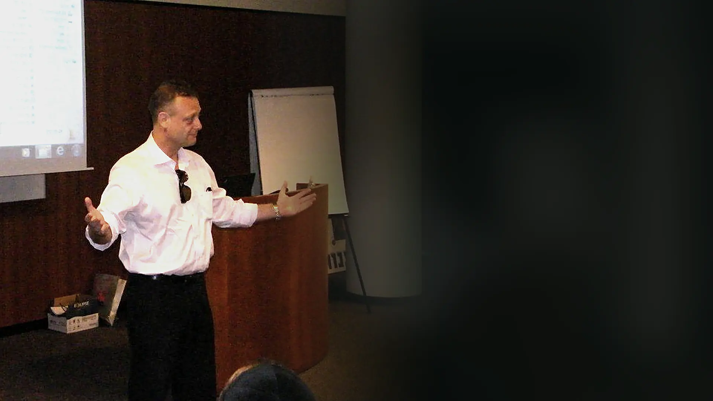
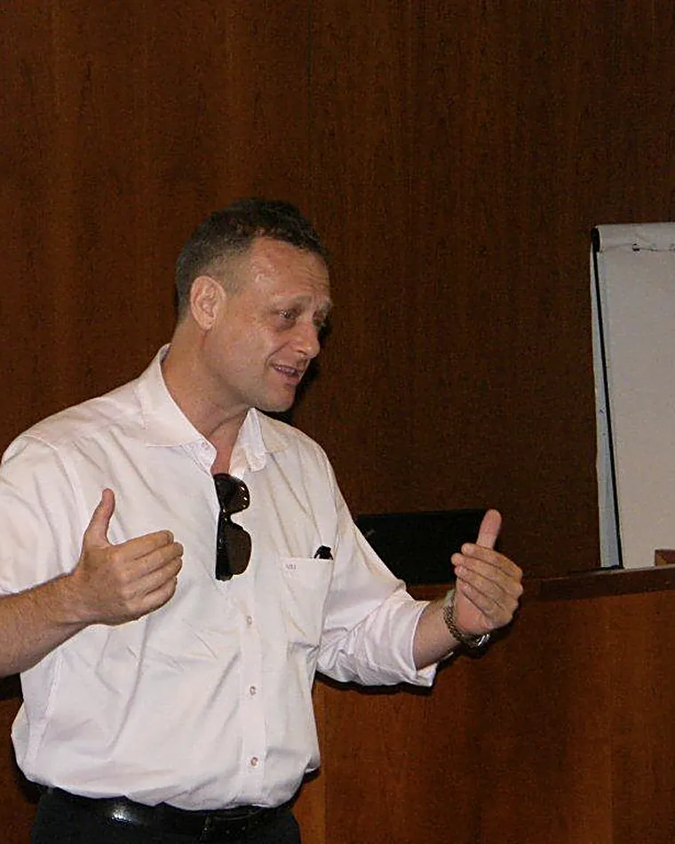

ההסתייגויות נשארו מתחת לפני השטח
איש לא אמר "אני מתנגד". כולם הנהנו, רשמו, ויצאו להפסקה. מה שלא נאמר בחדר ממשיך להיאמר במסדרון — ושם הוא חזק בהרבה.
הסימןהמשוב מצוין, השינוי לא קורה.

חוסה בבצ'יק, מנכ"ל מכון מיטב, בונה ומעביר תהליכי הכשרה לארגונים בכל הארץ — יחד עם צוות מרצים מנוסה. שלושה עשורים של עבודה עם קבוצות.
מרצה בכיר במוסדות
זה התסריט המוכר. משקיעים תקציב ויום עבודה שלם, המשוב בסוף היום מצוין — ושום דבר לא זז. הסיבה כמעט תמיד זהה: התוכן היה נכון, אבל התהליך הקבוצתי לא נבנה נכון.
איש לא אמר "אני מתנגד". כולם הנהנו, רשמו, ויצאו להפסקה. מה שלא נאמר בחדר ממשיך להיאמר במסדרון — ושם הוא חזק בהרבה.
תוכנית שנבנתה למקום אחד והועברה כמו שהיא למקום אחר. כשהדוגמאות רחוקות מהיומיום של המשתתפים, המסר נשמע נכון — ולא רלוונטי.
כל אחד יצא עם פרשנות אחרת למה שנאמר. בלי מונחים משותפים שהקבוצה בנתה בעצמה, אין למה לחזור בשבוע שאחרי.
הרקע שלי הוא קרימינולוגיה קלינית ופסיכולוגיה — עולם שבו לומדים שהדבר החשוב כמעט אף פעם לא נאמר במשפט הראשון. את זה הבאתי איתי לחדר ההכשרה.
לפני שנבנית תוכנית, יש שיחת אפיון עם הגורם המזמין: מה קורה בארגון, מה כבר ניסיתם, ומה ייחשב אצלכם הצלחה. רק אחר כך נבנים התכנים. הדוגמאות, המקרים והשפה נלקחים מעולם התוכן של המשתתפים עצמם.
זו הסיבה שאין אצלנו תוכניות מדף. כל קורס, סדנה או השתלמות נבנים מחדש — וזה מה שמבדיל בין יום שמקשיבים לו לבין תהליך שנשאר.

קבוצה שעובדת נכון מלמדת את עצמה. תפקיד המנחה הוא לאפשר לזה לקרות.חוסה בבצ'יק
הכול נשען על אותו בסיס — הבנה של מה שקורה בין אנשים כשהם לומדים יחד. הפורמט נגזר מהמטרה, לא להפך.
הליבה של העבודה. קבוצה היא לא אוסף של אנשים באותו חדר — יש בה תפקידים, כוחות ודפוסים שמשפיעים על מה שנלמד בה. הנחיה מקצועית היא היכולת לקרוא את זה בזמן אמת ולהשתמש בזה.
אנחנו בונים תוכניות מאפס: מיפוי הצורך, הגדרת מטרות ותוצרים, בניית הסילבוס, כתיבת החומרים והעברה בפועל. מיום עיון בודד ועד תוכנית שנפרסת על פני חודשים, כולל תעודות סיום.
הכשרה של מי שיעביר את התהליכים הלאה — בתוך הארגון או כמקצוע. כוללת תרגול מונחה, הדרכה אישית וליווי בשטח, ולא רק למידה תיאורטית.
מהרצאת מליאה בכנס, דרך יום עיון לצוות, ועד סדרת מפגשים. מותאמות לתוכן, לגודל הקהל ולזמן שיש לכם.
דינמיקה קבוצתית התמודדות עם התנגדויות עבודת צוות תקשורת בין-אישית תהליכי שינוי ארגוני ניהול קונפליקטים מנהיגות והובלת צוות שחיקה וחוסן רגישות תרבותית שיחות קשות
המכון הוקם ב-1995 על ידי חוסה בבצ'יק, שמשמש מנכ"ל שלו עד היום. מאז הוא עוסק בדבר אחד: לבנות לארגונים תהליכי למידה שמשאירים חותם אחרי שהיום נגמר.
אותו תהליך, בין אם מדובר בהרצאה בודדת או בהשתלמות בת חצי שנה. ההבדל הוא רק בעומק ובהיקף.
20–30 דקות. מה קורה בארגון, מה כבר ניסיתם, ומה ייחשב הצלחה. ללא עלות וללא התחייבות.
פורמט, מספר מפגשים, סילבוס, תוצרים מצופים ומי מהצוות מעביר — הכול בכתב.
המפגשים עצמם, בארגון או במקום אחר. אם משהו בחדר מצריך שינוי כיוון, משנים כיוון.
מסמך סיכום עם התובנות המרכזיות והמלצות. בתוכניות ארוכות — תעודות סיום ומפגש מעקב.
שלושה עשורים של הכשרות משאירים ארכיון. אלה המסמכים שארגונים ומוסדות העניקו בתום התהליכים.
[ציטוט המלצה — עדיף שיתייחס לתוצאה קונקרטית ולא ל"היה מעניין"]
[ציטוט המלצה — רצוי מסוג לקוח אחר, למשל מוסד הכשרה]
[ציטוט המלצה — אם יש המלצה מבוגר קורס ארוך, כאן המקום שלה]
עשרים דקות שבהן נבין מה קורה אצלכם בארגון ומה באמת נדרש. ללא עלות וללא התחייבות. אם אנחנו לא הכתובת הנכונה — נאמר את זה, ונפנה אתכם למי שכן.